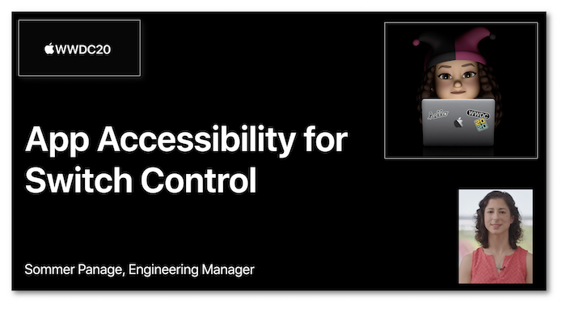
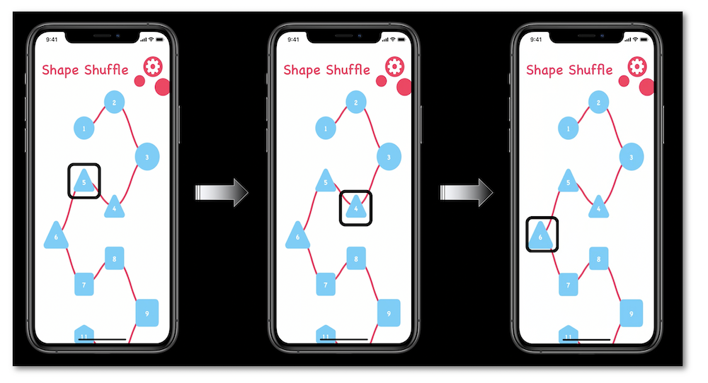
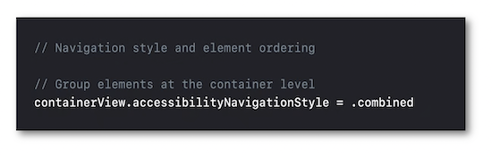
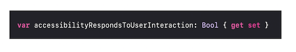

WWDC 2020 : Accessibilité avec le contrôle de sélection
Cette présentation visualisable sur le site développeur officiel d'Apple (session 10019) explique précisément pourquoi et comment personnaliser la navigation avec le contrôle de sélection.

Les thèmes abordés sont les suivants :
- Généralités
- ⟹ nouveauté iOS 14
- Améliorations de la navigation
- Bonnes pratiques
Généralités #
üé¨ (00:59)
Cette technologie implémentée nativement sur iOS s'adresse aux personnes à capacités motrices limitées afin qu'elles puissent utiliser leur terminal comme tout un chacun.
üé¨ (02:43)
L'interaction avec le curseur peut se faire manuellement ou de façon automatique en laissant les éléments défiler les uns après les autres : l'ordre de lecture est le même que celui de VoiceOver.
On rajoute très souvent des composants externes appropriés à des problèmes moteurs spécifiques pour une utilisation plus aisée dans le but de sélectionner et d'activer les éléments sur l'écran.
Si nécessaire, de plus amples informations concernant l'implémentation du contrôle de sélection sont disponibles dans la partie guide pour les développeurs.
üé¨ (03:20)
Cette partie de la vidéo met en avant les différents points qui justifient le fait de ne pas laisser le contrôle de sélection travailler automatiquement sans y apporter de modifications : temps nécessaire pour sélectionner, regroupement d'éléments pour aboutir à une action plus rapidement...
üé¨ (04:27)
Une parfaite implémentation de VoiceOver permet d'obtenir une excellente base de travail pour le contrôle de sélection qui, selon des cas spécifiques, peut tout de même nécessiter des ajustements pour coller au plus près de besoins bien particuliers.

Il est donc primordial de pouvoir s'appuyer sur une implémentation irréprochable de VoiceOver pour fournir l'expérience utilisateur la plus appropriée avec le contrôle de sélection.
üé¨ (09:20)
Les actions personnalisées sont un moyen extraordinaire pour VoiceOver et le contrôle de sélection de fournir une navigation équivalente à celle rencontrée en l'absence d'accessibilité.
Cet extrait explique parfaitement l'intérêt d'utiliser ce type de fonctionnalité.
üé¨ (10:38)
Il est désormais possible avec iOS 14 de personnaliser l'icône représentant l'action créée.

Pour en savoir plus, le guide pour les développeurs ainsi qu'un résumé détaillé de la vidéo WWDC 2019 intitulée Accessibility Custom Actions fournissent des informations précieuses sur les actions personnalisées.
üé¨ (05:15) üò≥ ‚üπ sans aucun syst√®me d'accessibilit√© activ√©.
üé¨ (06:42) üò± ‚üπ sans personnalisation du contr√¥le de s√©lection.
üé¨ (11:01) üëç ‚üπ avec les am√©liorations du contr√¥le de s√©lection pour une meilleure exp√©rience utilisateur.
Ordonnancement pour améliorer la navigation #
üé¨ (06:48)
Si aucune modification n'est réalisée, le système analysera de la gauche vers la droite tous les éléments en partant du coin en haut à gauche pour finir dans le coin en bas à droite (comme VoiceOver).
Cette lecture native risque donc de poser des problèmes fonctionnels pour des éléments dont la position graphique ne suit pas cette logique.

üé¨ (07:41)
L'idée la plus simple pour solutionner la problématique soulevée dans l'onglet Contexte consiste à créer des sous-groupes suffisamment judicieux pour faciliter et accélérer la sélection d'un élément où qu'il soit.

Pour réaliser cette opération, il est nécessaire de spécifier que tous les éléments contenus dans le sous-groupe sont combinés pour qu'ils puissent être éventuellement sélectionner individuellement.

Enfin, il ne faut surtout pas oublier de définir très précisément le contenu de chacun des sous-groupes créés.

Un exemple complet et détaillé reprenant ce type de fonctionnement est fourni dans la partie guide pour les développeurs.
Taxonimie pour améliorer la navigation #
üé¨ (07:15)
L'exemple proposé met en avant le nombre important d'interactions nécessaires pour être capable d'utiliser l'application de démonstration sans apporter quelque modification que ce soit avec le contrôle de sélection.

Le premier cas à considérer est celui qui montre à quel point il peut être particulièrement pénible de devoir sans cesse interagir plusieurs fois pour effectuer une seule et même action.
Le second cas se préoccupe des sous-menus d'actions proposées qui peuvent requérir encore plus de manipulations en fonction de la localisation de l'action.
üé¨ (08:26)
Afin d'éviter de multiples allers-retours dans les manipulations pour retourner les différentes cartes, l'astuce consiste à réaliser automatiquement l'action de retour à l'état initial dès que l'objet n'est plus sélectionné.

Au niveau du code, cela revient à implémenter dans la classe 'carte' certaines méthodes du protocole informel UIAccessibilityFocus qui fournit des éléments de programmation efficaces de façon à pouvoir être informé d'une sélection passée, active ou à venir d'un élément accessible.

üé¨ (09:54)
L'utilité des actions personnalisées pour le contrôle de sélection n'est plus à démontrer mais la précision de leur implémentation est d'une grande importance dans l'amélioration significative de l'expérience utilisateur.
L'idée directrice pour solutionner la seconde problématique mentionnée dans l'onglet Contexte est de créer des actions personnalisées qui seront localisées dans le menu principal en y adjoignant une icône dédiée pour en faciliter la reconnaissance.
Bonnes pratiques #
üé¨ (11:47)
Être à l'écoute de la (dés)activation du contrôle de sélection est très important afin d'adapter l'environnement applicatif si besoin.

Si besoin, de plus amples informations concernant les événements et leur notification sont disponibles dans la partie guide pour les développeurs.
üé¨ (11:56)
Dans des cas où un élément est nativement statique mais peut fonctionnellement changer de valeur, il est impératif de pouvoir permettre au contrôle de sélection d'interagir avec cet élément en utilisant accessibilityRespondsToUserInteraction (cas d'un label qui peut changer de valeur par simple tap).

üé¨ (12:44)
Penser à demander confirmation quand une destruction de données est requise par l'utilisateur.
üé¨ (13:02)
Ne pas insérer de limite temporelle pour une action qui peut s'avérer bien plus longue que prévue avec le contrôle de sélection.
üé¨ (13:25)
Penser à regrouper les éléments graphiques pour faciliter la navigation de l'utilisateur au sein de l'application.
üé¨ (13:42)
Ne pas laisser de données personnelles affichées à l'écran.